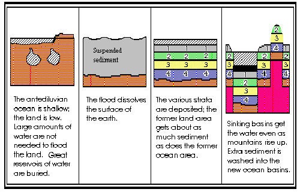
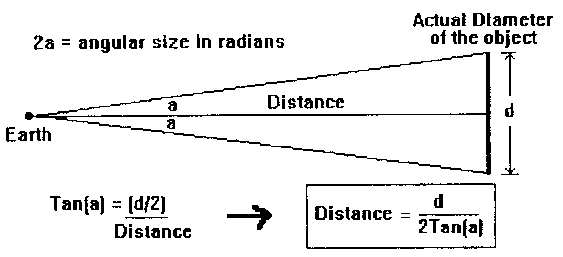
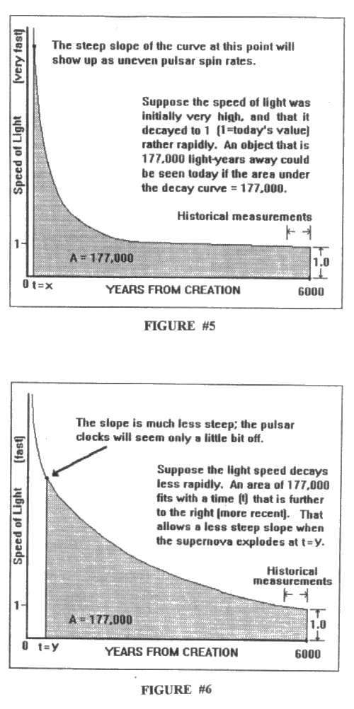

How Good Are Those Young-Earth Arguments?
A Close Look at Dr. Hovind's List of Young-Earth Arguments and Other Claims
by Dave E. Matson| Copyright © 1994-2002 |

Previous |
Contents |
Next |
We will now look at several arguments, which may or may not be supported by Dr. Hovind, that enjoy a wide circulation. I will also present a couple of arguments indicating that the earth is much older than a few thousand years.
A1. Woodmorappe's Collection of Bad Dates
Other Links:
|
Eat one of those and your tummy will curl right up! Seriously speaking, a favorite attack on radiometric dating involves dangling "horror stories" about gross errors before the reader, thus giving the impression that radiometric dating is totally unreliable. Woodmorappe (1979), with his collection of some 350 bad radiometric dates, must surely be the master of that technique.
Upon being presented with claims that radiometric dating is totally erroneous, a question naturally arises:
If radiometric geochronology is half as bad as Woodmorappe's list suggests, then how in the world did geologists ever arrive at a tight consensus for the official dates? Look at the various radiometric tables in use over the last 20 years or so and you will find, at least for the fossil-bearing strata, a remarkably tight agreement. ... Did the geochronologists throw darts to determine the accepted dates?
(Matson, 1993, p.1)
Either we have a worldwide conspiracy among geologists, which no sane person believes, or else the numerous radiometric dates were consistent enough to allow that kind of close agreement. In fact, Dr. Dalrymple, an expert in radiometric dating with lots of hands-on experience, puts the percentage of bad dates at only 5-10 percent.
Thus, we clear away the first illusion spun by creationism, namely that most of the dates are bad, that the radiometric picture is totally chaotic. In fact, it is not at all unusual for several different radiometric methods to agree within a few percentage points on a date. When you consider that each radiometric method is subject to different types of error, that the different "clocks" run at different speeds, such an agreement would be extremely rare on the basis of pure chance. In a number of instances, more than you might imagine, dates are further corroborated by methods that have nothing to do with radioactivity. Thus, the big, statistical picture painted by radiometric dating is excellent. Today, we have some 100,000 radiometric dates, the vast majority contributing sensibly to the overall picture.
Woodmorappe's main theme, minus the diplomatic wording, is that geologists are cheating like so many schoolboys to make their dates come out right. But even schoolboys need to know what the right answers are in order to cheat, and there was no absolute age list when radiometric dating was first applied to the strata.
Anyone can make up a list of bad cars, bad people, bad neighborhoods, or bad radiometric dates. What does that prove? Is it unsafe for you to drive a car, to meet new people, or to live in a neighborhood? Of course not!
The thing that is lacking in Woodmorappe's argument is statistical balance. He is very good at showing the many ways that things can go wrong; he has not shown that things normally go wrong.
To be sure, Woodmorappe isn't claiming that his table is a normal sample of radiometric dates. His is a table of discordant dates. However, in order to make his case against radiometric dating he must, at the very least, show a high percentage of bad dates among the credible radiometric candidates. This cannot be done by merely citing the numerous ways in which one can get a bad date; nor is it achieved by concentrating on atypical cases. Such information is certainly interesting, a healthy reminder of what can go wrong, but it is no threat to the radiometric dating methods which, after all, measure their successes on a statistical basis.
(Matson, 1993, p.2)
Thus, Woodmorappe is acting more like a mechanic who informs a car owner of the many ways that her car can break down, who quotes numerous horror stories to illustrate his points. Even if those horror stories were true, the mechanic has failed to prove that the lady's car needs repair, let alone junking.
How different it would be if the mechanic pulled out a statistical study done by a consumer magazine to show that the particular make and year for the lady's car was unreliable, due to certain parts, after so many miles. That kind of balanced statistical study is the very thing Woodmorappe's paper lacks.
An eye-opener awaits anyone who closely examines Woodmorappe's list of bad dates. Some of the dates involved minerals that even Woodmorappe admits are unreliable. No geologist would normally use such minerals.
Some of the dates are experimental! Since when do we count experimental work? The idea of experimental dating is to see whether a given radiometric method can be applied to certain materials or under certain conditions. The results make the method stronger, either by advising us to avoid certain minerals under certain conditions or by building our confidence in applying it to new materials or situations.
Other Links:
|
A great many dates, perhaps most, are rejects. That is, they were rejected because of internal indicators (such as a bad isochron) rather than on the basis of the final date produced. If the radiometric method is to be indicted, it must be indicted by dates which were counted as good but shown, by other means, to be bad. Rejects don't fall into that category. They can't be used against the radiometric method.
All of the dates lack the investigator's personal, detailed interpretation. That's no way to make a case for a bad date! Again, one must demonstrate that a bad date would have been counted as a good date had it not been contradicted by outside data. Properly interpreted, a number of gross "errors" listed in Woodmorappe's table simply vanish! A spectacular example showcased by Woodmorappe, though not actually listed in his table, deals with an example from California.
The Pharump diabase from the Precambrian of California yielded an Rb-Sr isochron of no less than 34 b.y., which is not only 7 times the age of the earth but also greater than some uniformitarian estimates of the age of the universe. This super-anomaly was explained away by claiming some strange metamorphic effect on the Sr.
(Woodmorappe, 1979, p.122)
Sounds pretty grim, huh? The unsuspecting reader would assume that here is a real disaster which geochronologists were trying to cover up with some phoney explanation! In fact, the 34-billion-year figure is the result of an incompetent reading of the data, an attempt by Woodmorappe to see an isochron where none exists!
The data do not fall on any straight line and do not, therefore, form an isochron. The original data are from a report by Wasserburg and others [1964], who plotted the data as shown but did not draw a 34-billion-year isochron on the diagram. The "isochrons" lines were drawn by Faure and Powell [1972] as "reference isochrons" solely for the purpose of showing the magnitude of the scatter in the data. ... The scatter of the data in Figure 6 shows clearly that the sample has been an open system to Sr-87 (and perhaps to other isotopes as well) and that no meaningful Rb-Sr age can be calculated from these data. This conclusion was clearly stated by both Wasserburg and others [1964] and by Faure and Powell [1972]. The interpretation that the data represent a 34-billion-year isochron is solely Woodmorappe's [1979] and is patently wrong.
(Dalrymple, 1984, pp.78-79)
Whatever the reasons may be for the scatter, the fact remains that these data were clearly a "discard" case. Thus, this example cannot be used against the Rb-Sr method. That Woodmorappe would see an isochron where none could possibly exist, by misinterpreting one of the lines Faure and Powell had drawn, this in spite of the fact that those authors stated that the data cannot be used, strongly suggests that Woodmorappe's search for discordant dates is superficial. One wonders how many other obvious discards are hiding in his table.
(Matson, 1993, p.7)
Perhaps, by now, you can understand why long lists of bad dates do not, in themselves, impress scientists. The success of such an attack on radiometric dating hangs on a detailed, case by case analysis as well as a clear demonstration that the sample is representative of the whole to some meaningful degree. In my paper (1993) I listed about 10 conditions which must be examined in any meaningful study of bad dates.
A2. Water and Vapor and Noah's Flood
Other Links:
|
Attempting to supply the water for Noah's flood is a much greater problem than you might think. True, one can simply say that God did it and leave it at that. The skeptic will reply, "How do you know what God did 4400 years ago? Were you there? Are you one of those deluded fools who thinks he is privy to God's personal thoughts?" Perhaps, you are simply declaring your faith in some biblical passage, according to your understanding. But declaring is not proving, and many a fool has claimed to speak for God. How easy it is to invoke the infallible name of God to vouchsafe our own ignorance! Biblical infallibility was cited in defense of a flat earth as late as 1935 in Zion, Illinois, by Christian radio evangelist Wilbur Glenn Voliva. He advocated the biblical view of the world's flatness over "modern astronomy." Some evangelical Christians continue to defend the belief that the sun moves around the earth, which they base on the "plain words of Scripture." Indeed, they have formed The Tychonian Society in order to defend their view "scientifically." Science confers a number of benefits, not the least of which is that scientific subjects may be taught in the classroom. Thus the quest to find the source of water for Noah's flood, to do it scientifically.
Since our atmosphere only holds enough moisture to account for less than an inch of water worldwide, creationists have found it necessary to seek out other sources. A massive vapor canopy is the favorite choice of many creationists. The concept, unfortunately, is a mass of scientific and biblical contradictions.
A vapor (or water) canopy, if of any significant thickness, would block out the sun and stars with a massively overcast sky! Didn't the Bible say something about the stars and moon being created to give man a clock for the seasons? Some clock, if humanity couldn't see it!
The increased atmospheric pressure, which would be greatly increased by a massive vapor canopy supported by the atmosphere, would also cause nitrogen narcosis. Adam and Eve, and the antediluvian generations, would be in a perpetual narcotic stupor!
Here is what a renown physicist, a Bible-believing Christian, had to say about the vapor canopy. He is referring to the model which was made popular by Whitcomb and Morris in their classic, The Genesis Flood.
They assert that the canopy's sudden collapse would have increased the volume of the ocean by 30 per cent (p.326). This would mean that 30/100 of the original ocean volume, or something like 30/130 of the present ocean volume, came from the canopy. That amounts to about 75 million cubic miles. That quantity of water in the form of a vapour canopy would raise the pressure of our atmosphere from its usual 15 pounds per square inch to a crushing 970 pounds per square inch, which would create all sorts of problems for living things.
Worst of all, the pressure in the base of the canopy would be so high that it would need to have a temperature of over 500 degrees Fahrenheit. (Any cooler, and it would collapse into rain.)
(Hayward, 1985, p.151)
Therefore, since antediluvian life was not pressure-cooked, any substantial vapor canopy in contact with our atmosphere is a scientific impossibility. Even a token vapor canopy depositing 40 feet of rain, as suggested by at least one creationist, does not get around all the problems. Dr. Hayward pointed out, on page 152, that winds in the upper atmosphere would soon dissipate such a structure, causing it to mix with the atmosphere and mostly rain out. Dr. Alan Hayward's final conclusion is this:
The supposed vapour canopy has been much talked about in recent-creationist circles, but very seldom thought about. A little thought soon shows there could never have been such a canopy, unless it was sustained by one long, continuing miracle. And that, of course, would be contrary to the teaching of 'Flood geologists', since they invented the canopy in the first place to explain how the Flood could have occurred by 'purely natural processes'.
(Hayward, 1985, p.152)
Obviously, you can't get more than a tiny fraction of the flood waters from the atmosphere without running into a host of difficulties, and that includes the latent heat of vaporization, yet another fatal heat problem. It takes a fair amount of heat to boil a quart of water into vapor. Even if that quart of water slowly dries up of its own accord, it still takes the same amount of heat to turn it into vapor. In that case, the heat is gradually drawn from the surrounding environment. Step in front of a fan after getting out of the shower and you will soon appreciate just how much heat water takes with it when it turns into vapor! Well, the reverse must also be true. When vapor condenses into water, it releases the same amount of heat which originally turned it into a vapor. If that were not true we would be losing (or gaining) energy in the cycle, and the first law of thermodynamics prohibits that.
In order to condense that vapor canopy into rain, it would have to release enough heat to raise the temperature of our atmosphere to 6000 degrees! That's a straightforward calculation of the latent heat of vaporization. There is no way to convert the vapor canopy into rain in time for Noah's flood without burning up the Earth! That is to say, the sheer heat would quickly turn that rain back into vapor! You would not be able to get more than a fraction of that water from the vapor canopy until the heat slowly, in stages, dissipated into space. The key word is "slowly," given that the thick vapor canopy would act as a blanket to keep thermal radiation from escaping.
Superficially, the two heat problems discussed above seem to be in contradiction. In one instance you must have a temperature of 500 degrees Fahrenheit just to keep all that water vapor from collapsing into rain. On the other hand, you cannot get it down without burning the earth up! However, this contradiction is but an illusion.
The scenario would likely be thus: If the temperature at the surface were normal and if the vapor canopy were in contact with the atmosphere, a small portion of the canopy would immediately collapse to produce rain. Soon, however, the latent heat of vaporization released would heat up the atmosphere to such an extent as to stop the rain and maintain the rest of the vapor in its canopy. After a time (centuries? millennia?) enough heat would escape through the thick vapor canopy to cool the atmosphere down. More of the vapor canopy would then condense and heat the atmosphere back up, once again checking any further decay of the canopy. In other words, the collapse would be exceedingly slow, perhaps taking many thousands of years or more. Meanwhile, Noah would be bubbling in 500 degree heat, which would slowly diminish over the years as the canopy slowly collapsed. What we have here is a nice, slow pressure cooker! Some of us still remember those large, pressure cookers our parents used. The meat was really tender when it came out.
Any attempt to disconnect the vapor canopy from the atmosphere would mean putting it in orbit. We would be dealing with ice crystals, each orbiting the earth like a tiny satellite. Each ice crystal would be traveling at around 18,000 miles per hour to maintain a close orbit! In order to convert that ice crystal to a raindrop landing on the earth, you must, in effect, neutralize its speed and have it fall to earth. Even if that could be done, it would create another heat problem. Putting the brakes on all that orbiting mass and dropping it down to earth would create a huge amount of heat! It would make a giant meteorite impact look like small potatoes!
How do we get those ice crystals down to earth? Blasting a little dust up into outer space just isn't going to neutralize all that water vapor orbiting at 18,000 miles per hour. It would take something really catastrophic, and the result would be messy and drawn out. That is to say, ice crystals in orbit are useless as a source for Noah's flood.
Thus, we can forget about the vapor canopy as a significant source of flood water.
Nor can more than a tiny fraction of the flood water be derived from pressurized reservoirs deep within the earth. Aside from stability problems involved in packing vast quantities of free water under miles of rock, an arrangement that would have caved in from the start, there is a problem in getting the water out. After a small quantity had been released, the pressure would have dropped to zero! At that point you have to cave in the caverns to displace the remaining water with rock.
However, that wouldn't drive the water much higher than the original sea level as the rock and water would simply change places. The Bible makes it clear that the flood waters came and lifted the ark up, that the high mountains were covered. Nothing is said about the ground caving in below ark and mountain!
That leaves Dr. Hovind's bizarre iceberg-from-space conjecture to make up almost all the water. Odd, that the Bible never hints at such a mechanism! The claim that huge blocks of ice, or pieces thereof, would be deflected to the North and South magnetic poles because of a super-strong magnetic field on earth is absurd. Most likely it is based on Barnes' totally discredited ideas about the earth's magnetic field (Godfrey, 1983, pp.73-77; Dalrymple, 1992, pp.16-17). It also makes assumptions about ice which are highly questionable.
Thus, with our earth sporting an ordinary magnetic field, this iceberg from space is not going to be rerouted to the North and South polar areas. It's going to crash into the earth like any other asteroid or comet. As it impacts at tens of thousands of miles per hour the conversion of potential energy to kinetic energy is going to vaporize it. And, that takes us right back to the latent heat of vaporization problem. Also, in order to supply any large quantity of water, to flood high mountains for example, and reliable translations of the Bible do mention high mountains, this asteroid would have to be huge -- huge enough to exterminate almost every living thing on the earth and in the sea. Tell me now, does the Bible say that the flood started off with a big bang, a great fireball from heaven? Or, does it say that a lot of rain started coming down and that the deep springs started bubbling up?
The more sophisticated creationists, realizing the horrible problems involved in flooding the highest mountains, assert that the earth was originally flat and, therefore, required very little water to flood. That's the position Dr. Hovind has taken. The excess water was afterwards collected into deepening basins which became our present day oceans. At the same time that the ocean basins were magically deepening the mountains were rising.
The first problem encountered is the Bible, itself. Good translations speak of the flood rising high above the earth, of covering all the high mountains (The New Oxford Annotated Bible and others). The Bible knows only of a simple flood which floods the land by special rain and by waters upwelling from the unchecked depths below the earth. (Ancient cosmology imagined a flat earth which rested on top of a primeval ocean, a world covered with a dome [the firmament] which kept vast quantities of water above the firmament from crashing down. To flood the ancient earth the deity only had to open the windows of the firmament and release the checks on the water below the earth [Babinski, 1986].) Where in this flood account do you hear of mountains rising and the surface of the earth being totally dissolved into sediment? There is not one iota of clear, unequivocal Scriptural evidence for such wild speculation! In their desperation, creationists have simply rewritten the Bible!
A second problem involves the thickness of sedimentary rock on the ocean floor as well as missing flood layers. Let us start with Dr. Hovind's assumption that the earth was relatively flat during the flood and that the excess water was drawn off into deepening ocean basins, even as the continental regions rose up. Former ocean areas and former land areas would have received approximately the same amount of sediment during a violent, worldwide flood which reworked the earth's original outer crust to a great depth.
Such would be the condition after the sediment first settled out. The excess water, now rushing off the rising continental areas, would wash vast amounts of sediment into the new ocean basins. Thus, today's ocean basins should have a much thicker and more complete layer of sedimentary rock than the continental areas. In addition, the first flood strata laid down on the new ocean floors should match the first flood strata laid down on today's continental areas, especially in areas adjoining the border between the two zones.
Why are the sedimentary rocks generally thinner on the ocean floor than in continental regions? Why are the sedimentary rocks of the Pacific and Atlantic sea floors no older than the late Jurassic? What happened to the Cambrian, the Ordovician, the Silurian, the Devonian, the Carboniferous, and the Permian strata? Funny, that Noah's flood should deposit all those strata in many, many places while systematically missing vast areas that were to become today's ocean floors!
A third problem lies in the fact that there is a sharp difference in the sedimentary strata as you move from a continental area (including the shelf) to an ocean area. According to the flood model this boundary area was originally flat and should have collected similar sediments before one section sank and the other rose. The sedimentary strata, without changing its composition, should simply dip (or drop along a fault) as it goes from continent to ocean. That is not what is observed!
A fourth problem lies in finding a believable mechanism to make the ocean basins sink in a few weeks(!) so as to make space for the retreating flood waters. The crust may be thin, thinner in proportion than the skin on an apple, as Dr. Hovind put it, but the material under it is heavier. Light stuff (like a cork) does not sink in heavier stuff (like water). The reason the ocean basins are lower is because they are made of denser material. The reason the continents are higher is because they are made of lighter material. Where does one get the force for depressing the basins and moving trillions and trillions of tons of heavy, semi-molten rock out of the way? How are those trillions and trillions of tons of heavy, semi-molten rock to be lifted up in the first place to support a rising ocean basin? (By raising the ocean floor slightly with respect to the land, creationists obtain the water they need to flood the earth.) Worse, how do creationists propose to move this hot rock in a few weeks (at the end of the flood) since it can only move a few inches a year? At that rate it can act like a fluid; try to speed it up and you have material acting like solid rock. As far as I can tell, nobody has the foggiest clue as to how this can be done scientifically.
A fifth problem lies in the instant rising of mountains. Just what mechanism do creationists have in mind which can propel a mountain 20,000 feet up in a couple of thousand years and, then, stop on a dime? Today, after great earthquakes, mountains are observed to rise a few feet at most. That is how most non-volcanic mountains actually rise. Are we to believe that the ancient world endured one magnitude 8 earthquake after another, day and night, for centuries, so that the mountains might be lifted up in record time? Of course not. Nobody could have built cities of brick under those conditions. It never happened.
A sixth problem lies in the absence of great gorges and canyons perpendicular to the coast. Rivers have cut deep gorges in places, but nothing like what we would expect for the vast quantities of water rapidly draining off continents of soft sediment. Where are these deep scars which Noah's flood would have left? We should have numerous "Grand Canyons" along all the coasts of the world by creationist reckoning. Ironically, the Grand Canyon doesn't count because it contains meandering patterns which could not have been formed by vast quantities of water quickly draining off the continent. Nor would soft sediments support the high, vertical walls and pillars found in the Grand Canyon. They would have slumped like a water-soaked sand castle!
A good geologist could probably cite many more problems, but I think I've offered enough. Six strikes and you're out! There is no escaping the need for miracles!
Miracles are the great equalizer. Any and every legend, from those of the Amazon to the views of the ancient Greeks, are equally good as long as they can use miracles. Thus, in the final analysis, the biblical flood story is no better than the tales of Zeus and of the gods of Olympus. We can't teach that in our science classes.
|
 Figure #3 In the Henry Morris model of Noah's flood (as I understand it) the land was originally very low. The antediluvian ocean floors then rose relative to the land, causing the displaced water to flood the earth. Large reservoirs of water soon erupted as well, and the catastrophic violence dissolved the surface of the earth. As the violence subsided, the suspended sediment formed much of the geologic column. Sinking basins soon gathered the water into today's oceans even as other areas rose up to form today's mountains. There are a number of fatal problems with this scenario. In panel #4, for example, we see that the bottom-most layers of a continental area should be present in the ocean floor as well. (They aren't.) In that panel we also see that the ocean floors should have a more complete and thicker strata sequence than the continental areas. (They don't.) After all, they collected the same sediments as the future continental areas -- and more (as represented by the black stratum) since material was washed off the rising continental areas and into the sinking ocean basins. These problems and others are discussed on the previous two pages. |
A3. Coal and Oil
The amount of coal and oil existing today greatly exceeds what could have been produced by decaying plants and animals in a few thousand years. It is naive to think that today's coal and oil came from the buried remains of Noah's antediluvian world. Most creationists simply have no idea how much raw material would have been required, especially for the oil deposits.
Because coal and oil are important economic resources, geologists have worked hard to estimate how much of these resources exist. The creationist writer Morton cites data published by Hunt indicating that the carbon in the coal alone is 50 times that in the entire present biosphere!...And the carbon in all oil deposits is 666 times that in the entire present biosphere! That in oil shales and other sedimentary rocks (which Morton doesn't mention!) is 40,000 times that in the present biosphere. And that doesn't count the enormous quantities of carbonates, much in the form of fossil shells. The Livingstone Limestone in the Canadian Rockies contains at least 10,000 cubic miles of broken crinoid plates!
(Sonleitner, 1991, file=MOVIE6B.WP)
Just how thick did Dr. Hovind say that antediluvian vegetation was?
In doing your math, be sure to allow plenty of open space for grasslands, so that the buffalo, horses, and numerous other grazers, past and present, have plenty of space for their herds. Be sure to have plenty of deserts or near-deserts for your reptiles. Most of them require a dry environment. You will also need plenty of marshy tundra pasture for your mammoths and other pre-flood, cold-adapted grazers.
A4. Mammoths: Were They Quick-Frozen?
Other Links:
|
The claim that mammoths were quick-frozen goes back at least several decades as an old Reader's Digest article will testify. It has no merit whatsoever.
To begin with, mammoths were adapted for severely cold weather as their heavy fur, complete with a thick, insulating underwool, and a thick layer of fat attest. Their four-toed feet and smaller size, compared to the European mammoths, was better for marshy tundra pasture. A little extra ice from space, assuming that it could even reach the ground without being vaporized, would hardly have bothered them! Obviously, the Arctic area was cold, though possibly a tad warmer and moist than today, before Dr. Hovind's iceberg-from-space arrived!
Take the frozen Berezovka mammoth, for instance. In its stomach were found arctic plants like conifers, tundra grasses, and sedges. Its flesh was really rather putrefied. "The excavators found the stench of the partially rotted Berezovka mammoth unbearable; even the earth in which it was buried stank." (Weber, 1980, p.15). Ancient predators had a chance to get at the carcass, which proved there was no instantaneous freezing. The unfortunate animal seems to have fallen from a river buff, possibly by getting too close to the edge and causing a slump, and broke many bones. In the muck of the floodplain below his carcass was soon frozen in (Strahler, 1987, p.381).
William R. Farrand, writing in 1961, pointed out that only 39 mammoths had been found with some of their flesh preserved. Out of those only four were found more or less intact, including the Berezovka mammoth. All of them were rotten to some extent and the evidence showed that most were somewhat mutilated by predators prior to freezing. Such things as grasses, sedges, other boreal meadow and tundra plants, a few twigs, cones, and pollen traces from high-boreal and tundra trees are typical of what was found in their stomachs. Evidence indicates that some of these mammoths had died in cave-ins or had drowned. The Mamontova mammoth was probably caught in a bog while grazing the floodplain of the ancient Mamontova River. Another apparently died on a floodplain, possibly falling through river ice, and rotted mostly away before natural burial. The upright nature of many mammoth finds suggest "that they perished when a rapid thaw melted the permafrost and turned the tundra into a huge bog." (Chorlton, 1984, p.70).
A more recent find, that of a calf dated at about 40,000 years, was retrieved whole in 1977 from a creek bed in eastern Siberia. Apparently it had fallen through a thin layer of frozen turf into a channel cut by melting water. Evidence, sorry to say, indicates that the animal starved to death. The hole was soon filled in and the mammoth was preserved for thousands of years by the cold and by a high tannic acid content from decayed vegetation. Eventually a shifting channel of a river exposed the mammoth. (Chorlton, 1984, p.71)
Getting bogged down in a marsh, falling into "riparian" gullies, getting mired in sticky mudflows, falling through the thin ice of a lake, and getting caught in river bank cave-ins of river ice are some of the hazards mammoths would face. Judging by what they were eating, it appears that the time of death was usually late summer or early fall, precisely the time when melting and solifluction would have been at a maximum and travel most dangerous. Most of their remains are associated with river valleys and fluviatile and terrestrial sediment. There is no direct evidence that any mammoth simply froze to death (Farrand, 1961).
All of this evidence points to a routine life on the arctic tundra.
It is interesting to note that only the mammoths and wooly rhinoceri are found frozen in Siberia (Weber, 1980, pp.15-16). If a sudden disaster overwhelmed the entire area, don't you think that we would find a whole range of preserved animals?
Dr. Hovind, I think that you have been had by that fellow on the North Slope. I doubt very much that he choked down a piece of putrid mammoth meat! It's probably a favorite tall-timber tale of the North.
A5. A Couple of Ice Age Problems
Dr. Hovind believes that there was only one ice age which began sometime after Noah's flood ended, that being around 4300 years ago by his reckoning. Thus, the world moved from a warm, tropical climate to an ice age only a few thousand years ago. There are fatal problems with that view.
First, we now know that there were at least 7 ice eras lasting on the average some 50 million years apiece. Each ice era was, itself, composed of numerous ice epochs which lasted about two or three million years. They, in turn, were composed of ice-age cycles which often lasted around 100,000 years. Thus, there have been numerous fluctuations between warm and cold climates. (Chorlton, 1984, pp.20-21). The more recent advances and retreats of the glaciers have resulted in sea level changes which, in turn, have affected the heights of coral reefs, the oxygen isotope ratios in sea floor sediments, and shorelines around the world. Several levels of terraces were carved in the world's shorelines by recent fluctuations in the ocean level, each lasting many thousands of years. I don't have the space to explore this issue, but numerous facts fit together to document the existence of many "ice ages." Regarding one ancient ice era, we have a remarkable coming together of different facts:
The theory of continental drift led to one of the most remarkable discoveries in ice age studies. During the 1960s, scientists analyzed the magnetic orientation of rocks from many parts of the world and concluded that North Africa had been located over the South Pole during the Ordovician period, about 450 million years ago. If they were correct, there should be traces of ancient glaciation in the Sahara. At about the same time, French petroleum geologists working in southern Algeria stumbled on a series of giant grooves that appeared to have been cut into the underlying sandstone by glaciers. The geologists alerted the scientific world and assembled an international team to examine the evidence. The team saw unmistakable signs of an ice age: scars created by the friction of pebbles incorporated into the base of glaciers; erratic rocks that had been transported from sources hundreds of miles distant; and formations of sand typical of glacial outwash streams.
(Chorlton, 1984, p.141)
In some places in the Sahara the grooves made by glaciers can be traced for hundreds of miles (Chorlton, 1984, p.144). How do creationists explain glaciers in the Sahara?
Second, we have a problem with permafrost. Chorlton informs us that the building up of a 100-foot deep layer of permafrost takes thousands of years of freezing weather to accomplish. The bad news for creationists is this:
About 20 per cent of the world's land area remains permanently frozen -- in some cases to depths of almost a mile.
(Chorlton, 1984, p.30)
Thus, we have direct evidence that some of the frozen parts of our world have been frozen a lot longer than a few thousand years! Try a few million years! (Forget about super-cold snowballs crashing into the Earth and instantly freezing thousands of feet of earth. They would have vaporized upon impact.)
A6. The Distance to Supernova SN1987A and the Speed of Light
Other Links:
|
When supernova SN1987A exploded, a fair amount of ultraviolet light was given off in addition to the usual, visible light. About a year after the explosion, the light struck a ring of gas some distance from the star, illuminating different parts of it at different times. "Its absolute diameter was determined based on the timing of ultraviolet spectral lines, where observed light curves are fitted to models. The angular size on the sky is known from Hubble telescope measurements." (Ron Ebert, Internet, 5/20/98). (The angular size is roughly how big something appears to you. I. e., your small fingernail, held at arm's length, has about the same angular size as the moon viewed without instruments.) It turned out that this ring of gas is titled about 43 degrees to our view. Knowing the actual diameter and the angular diameter, the distance is easily calculated using a simple, trigonometric formula, and was done with an error of less than 5%.
|
 Figure #4 No matter how a perfect circle is viewed in space, the longest line across it from our viewpoint will give the true, angular diameter. Knowing the real size of an object (say, in miles) and how large it appears (in degrees), one can calculate the distance. The distance formula falls right out of the definition for the tangent function. Take the moon, whose diameter is 2160 miles, whose angular size is 0.5 degrees. That yields a distance of 248,000 miles, which is quite decent. (If you are not familiar with trigonometry just skip this.) |
Many creationists would have you believe that the speed of light was once very high and has been slowing down ever since. The motivation for this reasoning is to keep the age of the universe at about 6000 years while accounting for the fact that we can see the distant stars. As I will later show you in detail, if there is any truth to that claim, then the light we now see from SN1987A must have been traveling considerably faster when it left the vicinity of that supernova. That means our telescopes today would see things happening there in slow motion! As it so happened, by studying changes in the light levels, astronomers were able to calculate the half-lives of the cobalt-56 and cobalt-57 created in the aftermath of that supernova explosion. Far from exhibiting a slower decay rate, their decay rates matched the cobalt-56 and cobalt-57 decay rates measured in our laboratories. Therefore, the light leaving the vicinity of SN1987A was traveling at its normal speed, and that means we are seeing things almost 200,000 years ago!
Still, the creationist has one ace up his sleeve. What if the cobalt-56 and cobalt-57 created by SN1987A was actually decaying much faster, a rate that only appeared normal in our telescopes because of the slow-down factor? We might be seeing a slow motion replay of fast decay rates, or we might be seeing a normal replay of normal rates. It would appear to us, either way, that no change had occurred. Does this sound confusing?
To this one might say, "Get an education!" Relativity is central to modern science and the speed of light is a fundamental constant. Light can't go faster than about 186,000 miles a second and that's that. One could then recite volumes of laboratory studies, experiments, and observations to impress the reader with the power and reliability of special relativity. However, that approach might seem rather dogmatic to someone lacking an education in the sciences. Thus, I will pretend that light once traveled much faster in the past (as might be imagined in Newtonian physics) and work out some of the consequences.
My first point is based on a straightforward observation of pulsars. Pulsars put out flashes at such precise intervals and clarity that only the rotation of a small body can account for it (Chaisson and McMillan, 1993, p.498). Indeed, the more precise pulsars keep much better time than even the atomic clocks on Earth! In the mid-1980s a new class of pulsars, called millisecond pulsars, were discovered which were rotating hundreds of times each second! When a pulsar, which is a neutron star smaller than Manhattan Island with a weight problem (about as heavy as our sun), spins that fast it is pretty close to flying apart. Thus, in observing these millisecond pulsars, we are not seeing a slow motion replay as that would imply an actual spin rate which would have destroyed those pulsars. We couldn't observe them spinning that fast if light was slowing down. Consequently, under the reasonable assumption that if light slowed down in a fundamental way, it would have slowed down everywhere, we can dispense with the claim that the light coming from SN1987A might have slowed down. Therefore, the decay rates observed for cobalt-56 and cobalt-57 were the actual decay rates and we are seeing things as they were 170,000 years ago.
A more quantitative argument can also be advanced for those who need the details. Suppose that light is slowing down according to some exponential decay curve. An exponential decay curve is one of Mother Nature's favorites. It describes radioactive decay and a host of other observations. If the speed of light were really slowing down, then an exponential decay curve would be a very reasonable curve to start our investigation with. Later, we will be able to draw some general conclusions which apply to almost any curve, including those favored by creationist Barry Setterfield.
We want the light in our model to start fast enough so that the most distant objects in the universe, say 10 billion light-years away, will be visible today. That is, the light must travel 10 billion light-years in the 6000 years which creationists allow for the Earth's age. (A light-year is the distance a beam of light, traveling at 186,000 miles per second, covers in one year.) Furthermore, the speed of light must decay at a rate which will reduce it to its present value after 6000 years. Upon applying these constraints to all possible exponential decay curves, and after doing a little calculus, we wind up with two non-linear equations in two variables. After solving those equations by computer, we get the following functions for velocity and distance. The first function gives the velocity of light (light-years per year) t years after creation (t=0). The second function gives the distance (light-years) that the first beams of light have traveled since creation (since t=0).
V(t) = V0 e-Kt
S(t) = 1010(1 - e-Kt)
V0 = 28,615,783 (The initial velocity for
light)
K = 0.00286158 (the decay rate parameter)
With these equations in hand, it can be shown that if light is slowing down then equal intervals of time in distant space will be seen on Earth as unequal intervals of time. That's our test for determining if light has slowed down. But, where can we find a natural, reliable clock in distant space with which to do the test?
As it turns out, Mother Nature has supplied some of the best clocks around. They are the pulsars. Pulsars keep time like the Earth does, by rotating smoothly, only they do it much better because they are much smaller and vastly heavier. The heavier a spinning top is the less any outside forces can affect it. Many pulsars rotate hundreds of times per second! And they keep incredibly precise time. Thus, we can observe how long it takes a pulsar to make 100 rotations and compare that figure to another observation five years later. Therefore, we can put the above creationist model to the test. Of course, in order to interpret the results properly, we need to have some idea of how much change to expect according to the above creationist model. That calculation is our next step.
Let's start by considering a pulsar which is 170,000 light-years away, which would be as far away as SN1987A. Certainly, we can see pulsars at that distance easily enough. In our creationist model, due to the initial high velocity of light, the light now arriving from our pulsar (light beam A) took about 2149.7 years to reach Earth. At the time light beam A left the pulsar it was going 487.4686 times the speed of light. The next day (24 hours after light beam A left the pulsar) light beam B leaves; it leaves at 487.4648 times the speed of light. As you can see, the velocity of light has already decayed a small amount. (I shall reserve the expression "speed of light" for the true speed of light which is about 186,000 miles per second.) Allowing for the continuing decay in velocity, we can calculate that light beam A is 1.336957 light-years ahead of light beam B. That lead distance is not going to change since both light beams will slow down together as the velocity of light decays.
When light beam A reaches the Earth, and light is now going its normal speed, that lead distance translates into 1.336957 years. Thus, the one-day interval on our pulsar, the actual time between the departures of light beams A and B, wrongly appears to us as more than a year! Upon looking at our pulsar, which is 170,000 light-years away, we are not only seeing 2149.7 years into the past but are seeing things occur 488.3 times more slowly than they really are!
Exactly 5 years after light beam A left the pulsar, light beam Y departs. It is traveling at 480.5436 times the speed of light. Twenty-four hours after its departure light beam Z leaves the pulsar. It is traveling at 480.5398 times the speed of light. Making due allowances for the continual slowing down of the light, we can calculate that light beam Y has a lead in distance over light beam Z of 1.318767 light-years. Once again, when light beam Y reached Earth, when the velocity of light had become frozen at its present value, that distance translates into years. Thus, a day on the pulsar, the one defined by light beams Y and Z, appears in slow motion to us. We see things happening 481.7 times slower than the rate at which they actually occurred.
Therefore, if the above creationist model is correct, we should see a difference in time for the above two identical intervals, a difference which amounts to about 1.3%. Of course, the above calculations could be redone with much shorter intervals without affecting the 1.3% figure, being that the perceived slowdown is essentially the same for the smaller intervals within one day. As a result, an astronomer need only measure the spin of a number of pulsars over a few years to get definitive results. Pulsars keep such accurate time that a 1.3% difference--even after hundreds of years--would stand out like a giant redwood in a Kansas wheat field!
So, what are the results of this definitive test? Many pulsars have been observed which show nothing remotely close to a 1% change in their rotation rates over a five year period. Although we have technically disproved only the above model, we have, nevertheless, thrown a monkey wrench into the machinery for decaying light-speed. Every such scenario must have the slow motion effect described above. Furthermore, the slow motion effect is directly related to how fast the light is moving. If a model requires light in the past to move one hundred times faster than observed today, then, at least for some interval of time measured in that part of space, we would observe things moving one hundred times as slow.
That's the fatal point which no choice of light-velocity decay curve can wholly remedy. The creationist model, in order to be useful, must start with a high velocity for light so that objects ten billion light-years away can be seen in a universe a mere 6000 years old. Consequently, such a universe must appear, in general, to be slowing down more and more the farther we look into the depths of space. And the farther we look, in general, the more dramatic the perceived slowdown should be.
Such a slowdown shouldn't be confused with the legitimate slowdown calculated on the basis of special relativity. Einstein showed that if an object is moving away from us at a significant fraction of the speed of light, we would see events on that object slowing down noticeably. It would not be an illusion as is the case for the creationist scenario with its absolute, Newtonian time frame. Thus, we would see a dramatic slowing down at cosmological distances, where galaxies are moving away from us at a significant fraction of the speed of light. However, this legitimate cosmological effect is important only for really great distances, and it plays no significant role in our calculations. At 170,000 light-years, for instance, the effect would be virtually nil.
It might seem that if we started out with a fantastically high velocity for light, which then decayed precipitously, we could reduce the problems. In the extreme case, light might start out at "infinity" and suddenly drop to normal values. Certainly, that would allow us to see the most distant parts of our universe while keeping it only 6000 years old. It would also preserve normal light speeds over the last 6000 years. Unfortunately, astronomers would not be able to see anything further than 6000 light-years away! We would not see supernova 1987A at all! The last photon leaving SN1987A under the "infinite" speed would already have reached us instantly. The next photon to leave would be traveling at a normal speed, and it would still be out there in space on its way to us. Consequently, we could not see anything further than 6000 light-years away. Since we don't have that kind of problem, we may "can" that extreme case!
In a less extreme case, we might start with a very high velocity for light, which rapidly decays to normal. Thus, the decay curve would have near-normal speeds for most of the years between t=0 and t=6000 (Figure #5). Historical measurements of the velocity of light would not detect any change, which is the actual case. However, the effect relative to our calculated model (which is represented by Figure #6) would be to move the latest departure time of light beam A (from the supernova) closer to the time of creation and to jack up its speed. (Compare the light speeds at t=x and t=y, Figures #5 and #6). That is, because the velocity of light decays so rapidly (Figure #5), any light leaving the more distant objects in the universe would have to get an earlier start so as to cash in on that speed before it's gone. After all, we do see those objects, meaning that the light had to travel the full distance in less than 6000 years. The drawback (Figure #5) is that when the light leaves the supernova its speed is changing rapidly (a steeper slope on the decay curve). That means the pulsars would appear to keep very poor time as observed today over a period of a few years.

Suppose, then, that we took a much less extreme case of the above. Pretend that Figure #6 is the graph of a much more moderate light decay curve. While this curve is more in accord with the fact that pulsars keep good time, the problem is by no means solved. Pulsars keep such good time that even a little deviation, as predicted by this latter model, would show up dramatically. Astronomers don't find that kind of deviation for every pulsar, if any. Furthermore, in choosing a model that allows the speed of light to decay more slowly to its present value, we are left with another problem. Historical measurements would clearly reveal that light was faster in the past (Figure #6). The slower light decayed to its present speed, the more obvious that latter problem becomes.
We might even try a flat curve that doesn't decay at all, except for a rapid drop in historical times. Such a curve is a bit contrived, but it would be in accord with the historical measurements as well as with the fact that pulsars keep good time (flat slope). However, in order to see objects 10 billion light-years away in a 6000 year-old universe, the light speed for that curve would have to be set at 1.6 million times the present speed of light! The spinning pulsars we see would have flown apart! That is, their actual rotational speeds would have to be so much greater than observed as to present a physical contradiction.
Having surveyed the extreme cases, as well as the middle ground (the case with the calculations), we may confidently reject the claim that the velocity of light started out fast and then decayed to its present value. Every possible decay curve, save the kind of impractical curiosities a mathematician might construct, is ruled out by simple observations. Consequently, when we look at a supernova that is 177,000 light-years away, we are looking 177,000 years into the past. When astronomers observe a galaxy billions of light-years away, they are looking billions of years into the past.
There are other good reasons for rejecting the claim that light once had a much higher velocity. It is a fundamental constant tied to energy by the equation E = mc2. If we could somehow monkey around with the speed of light, the whole universe would be radically altered! It's not just another pretty number!
I will not pursue this matter beyond the above disproof. However, let me leave you with a few references for further reading:
- http://www.weburbia.com/physics/FTL.html (What, if anything, can go faster than light?)
- http://www.talkorigins.org/faqs/c-decay.html (C-decay claims by creationists)
- Ebert, Ronald. 1997. REPORTS of the National Center for Science Education, "Does the Speed of Light Slow Down Over Time?" Vol.17 No.5 (Sept./Oct.), p.9-11 P.O. Box 9477, Berkeley, CA 94709-0477
A few creationists have argued that the universe really isn't that big. In particular, Slusher, working for the Institute for Creation Research, argued in 1980 that the universe is based on a Riemannian space which allowed no point to be more than 15.71 light-years away. The great distances observed would be an illusion based on mistaking the Riemannian space for Euclidean space.
This model, however, requires that the distance to supernova SN1987A be measured at less than 15.71 light-years in contradiction to the 170,000 light-years actually measured. Unexploded versions of SN1987A would be seen at the same time, one of them being at a perceived distance of 170,000 light-years! A few decades later, the light from the explosion would circle around again, thus causing us to see SN1987A explode all over again! This is madness, not science! See Strahler (1987, pp.114-116) for a thorough debunking of this Riemannian space nonsense. (George Friedrich Bernhard Riemann, 1826-1866, was a German mathematician whose work on curved space proved helpful to Einstein, but not with the absurd radius of curvature assigned by Slusher!)
Yet another idea, advanced by Henry Morris and others, is that star light was created in situ during the Genesis creation week. However, we have now left the realm of science for theology. There is no scientific way to separate star light from its origin in a star. Not only is it theology, but it's bad theology. God creates a universe which forces him to be a deceiver! It goes beyond the need for any reasonable appearance of age as a result of functionality. There is no need, for example, to see supernovae explode before their time. An observer would ultimately see the supernova leap back together and explode all over again when the light from the real explosion finally arrived! It makes God out to be an idiot.
When the creationist smoke screen finally dissipates, the debate hall falling silent at last, the young-earth advocate finds himself back on square one. He is looking at stars many millions of light-years away, stars putting out light which takes many millions of years to reach us! Attempts to speed up the velocity of light or to shrink down the universe have come to naught. What does remain is prime evidence for the old age of our universe.
Previous |
Contents |
Next |
| The FAQ | Must-Read Files | Index | Creationism | Evolution | Age of the Earth | Flood Geology | Catastrophism | Debates |